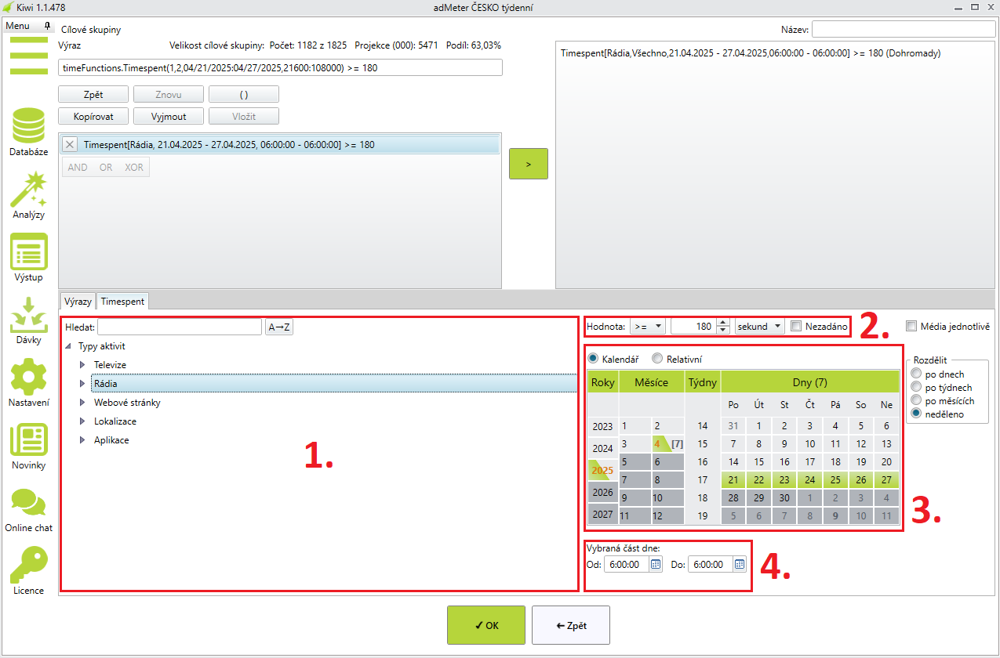

Timespent
Funkce timespent slouží k definování cílové skupiny na základě konzumace mediálního obsahu.
Pokročilé nastavení
- Časová hodnota Nezadáno - v tomto případě splní podmínku timespent ti respondenti, kteří neměří 70% času vybraného období.
- Volba Média jednotlivě - v případě výběru více médií se při kliknutí na šipku vytvoří více timespent výrazů pro každé vybrané médium.
- Volba Rozdělit časové úseky - podobně jako u předchozí volby vygeneruje při kliknutí na šipku více timespent výrazů pro rozdělené období podle zvoleného časového intervalu.